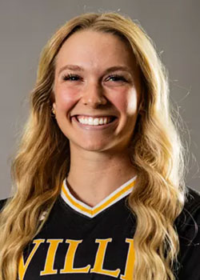

Jocelyn Langer's Portfolio for AENG 110 Class |
|
| Home Photo Project Infographic Project Bookmark Press Project Video Production Project | |
|

Softball Player at Millersville University |
Hello! My name is Jocelyn Langer. I am from Wexford, PA but I am currently a freshman, at Millersville University where I also get to play softball. Coming to Millersville, my passion for hands on work drove me to decide on Technology Engineering Education with a concentration in Engineering Design major. I enjoy going to church, listening to music, working out, and hanging out with friends. My friends and family describe me as a goofy and haardworking person, with a drive to always do my best. I am always eager to learn more about technology and after I graduate I would like to teach at a high-school level back in my hometown. As a highschooler last year I loved my engineering classes because it brought different creativity then the other classes. I am excited to see where my major takes me in the future.
|
| Home Photo Project Infographic Project Bookmark Press Project Video Production Project | |
|
©2024 Jocelyn Langer | |